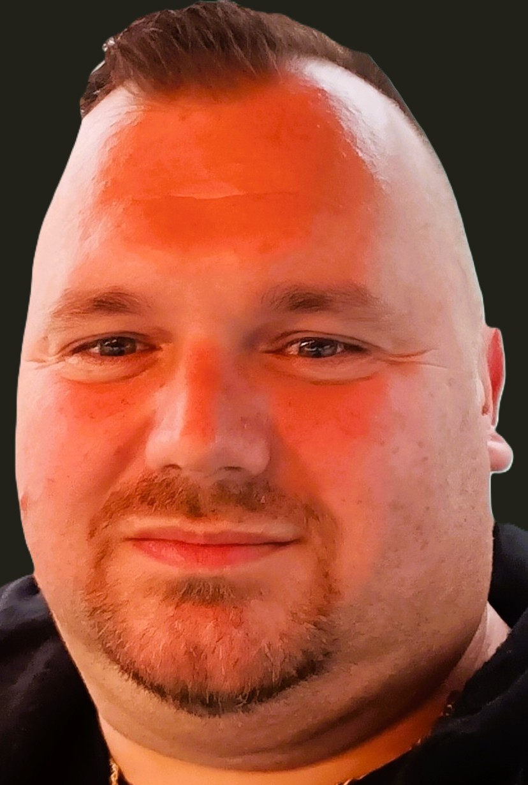
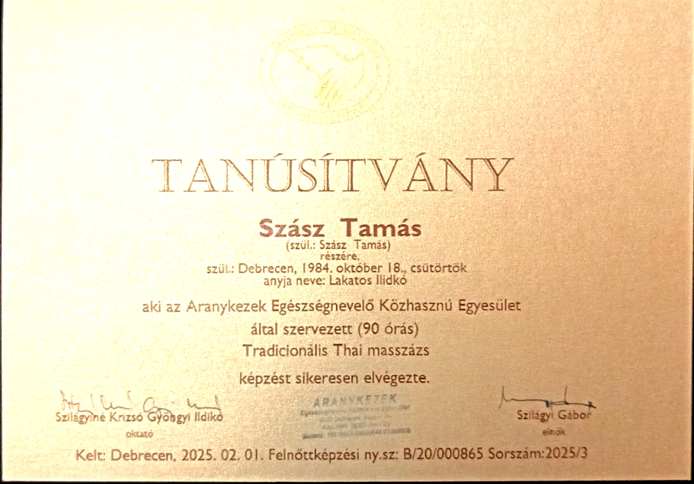
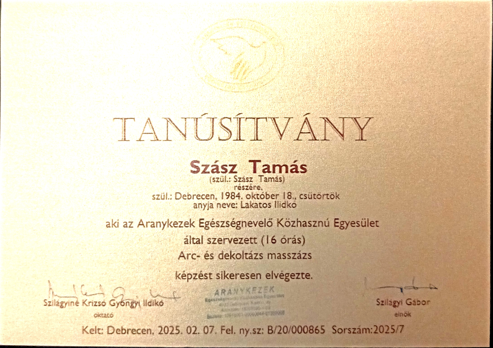
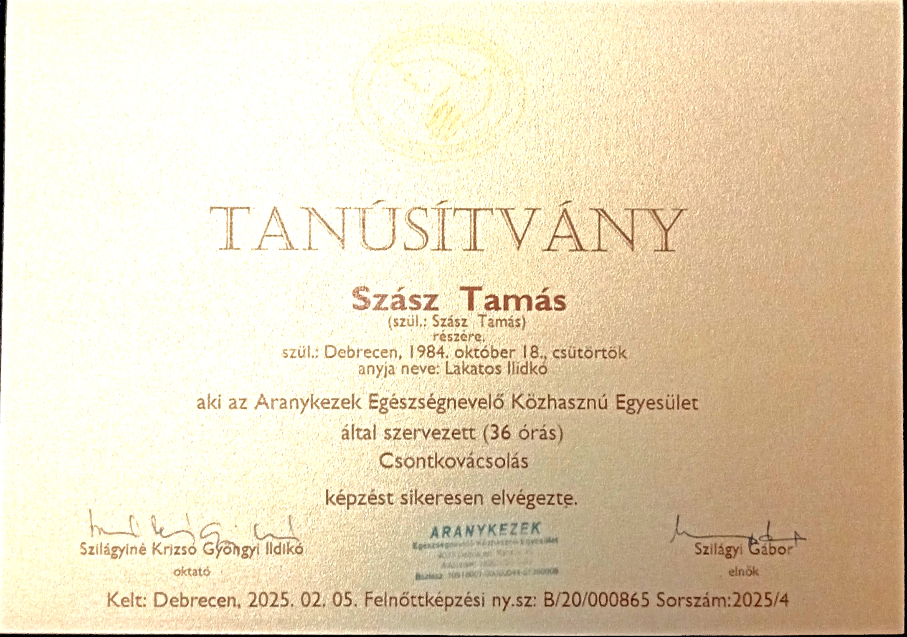
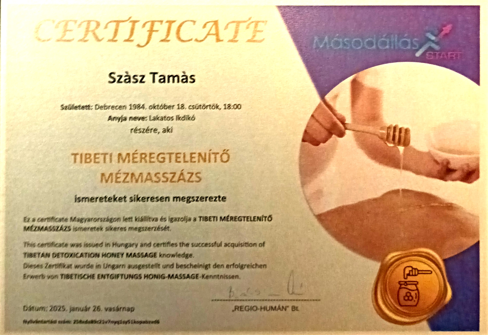
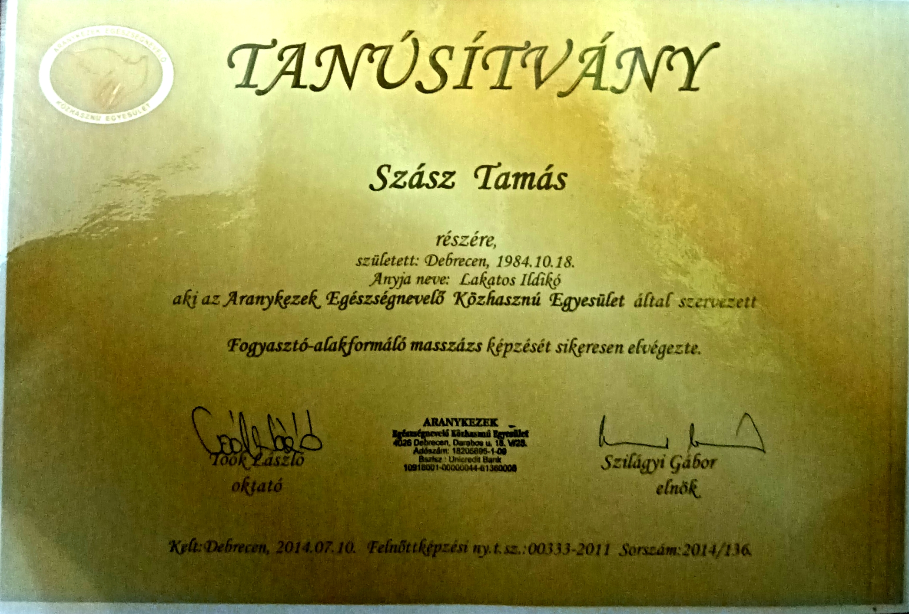
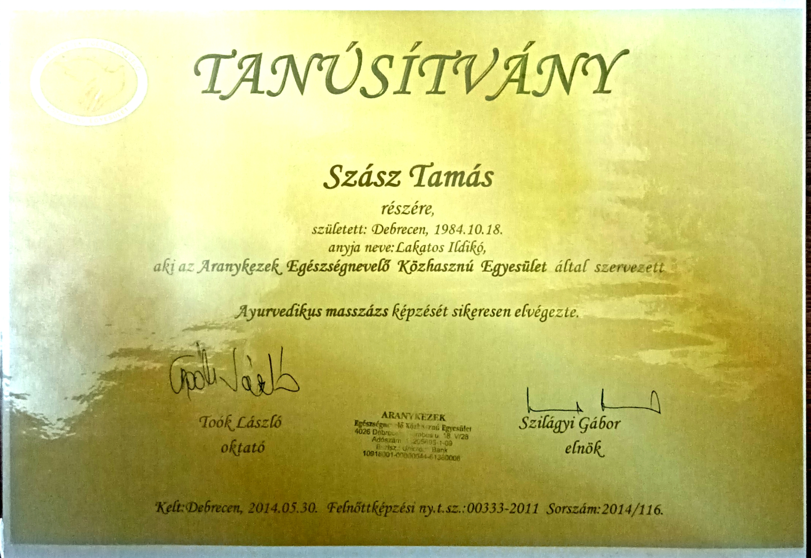

Éld át a pihentető és gyógyító masszázs élményét!

Az ayurvedikus masszázs India ősi gyógyító módszere, amely az energiacsatornákat tisztítja. Olajokkal végzett kezelése mély relaxációt biztosít. Javítja az életenergiát és a közérzetet.
Ez a masszázs serkenti a nyirokkeringést és segíti a zsírbontást. Hatékony a cellulit csökkentésére. Ajánlott azoknak, akik formálni szeretnék testüket.
Az arc- és dekoltázsmasszázs fokozza a vérkeringést, és segíti a bőr megújulását. Rendszeres alkalmazása csökkenti a ráncokat. Felfrissíti és fiatalítja az arcbőrt.
A csontkovácsolás segít helyreállítani a gerinc és az ízületek egyensúlyát. Fájdalomcsillapító és mozgásszervi problémákra kiváló. Csökkenti a merevséget és javítja a testtartást.
A thai masszázs nyújtásokkal és akupresszúrás technikákkal dolgozik. Segít a test rugalmasságának megőrzésében. Energetizál és csökkenti a stresszt.
A mézes masszázs méregtelenítő hatású, tisztítja a bőrt és élénkíti a vérkeringést. A méz természetes gyógyító erejét használja fel. Erősíti az immunrendszert és segíti a test méregtelenítését.






📍 Debrecen, Károlyi Mihály utca 5.
📧 megerdemledmasszazs1@gmail.com
📞 +36 20 336 1665